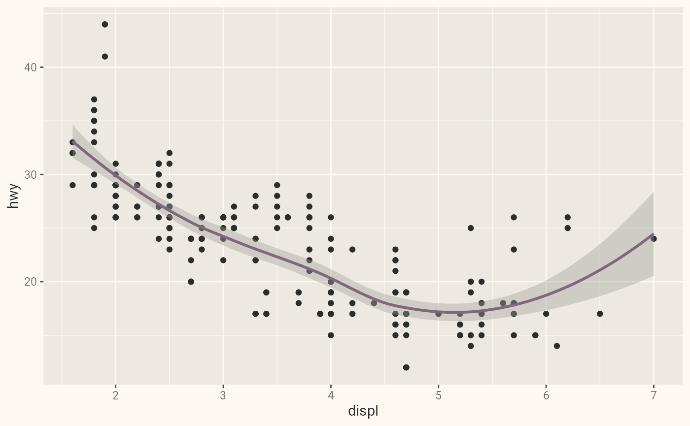
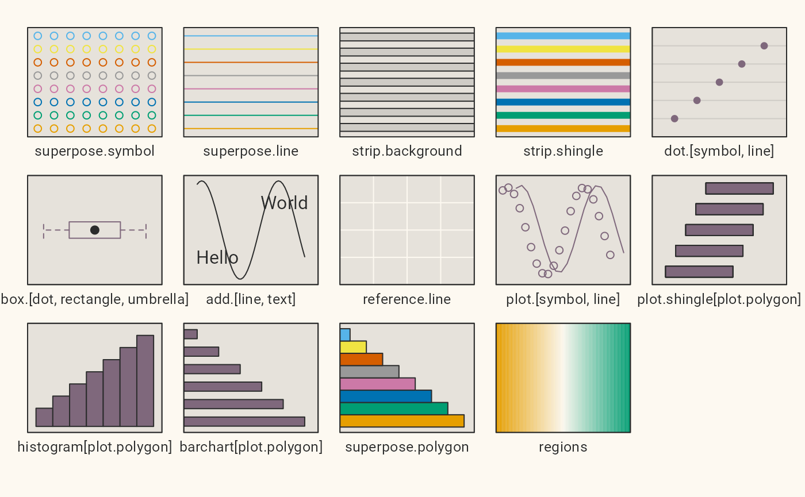
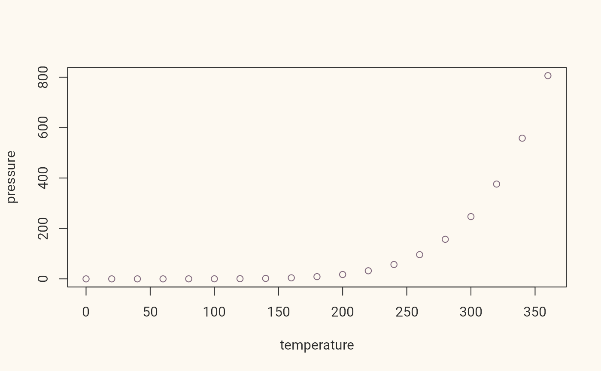

R Markdown
This is an R Markdown document themed with {bslib} package. bslib makes it easy to customize the main colors and fonts of a html_document, flexdashboard::flex_dashboard, shiny::fluidPage(), or more generally any website that uses Bootstrap for styling. The theme parameter in the yaml front-matter of this Rmd document describes a bslib::bs_theme() object, which provides access to 100s of theming options (via its ... argument) in addition to the main options demonstrated here (e.g., bg, fg, primary, etc).
This particular example uses bslib’s default Bootstrap version (which, at the time of writing, is Bootstrap 5). However, if reproducibility is important, it’s recommended that you “lock-in” the version by adding version: 5 to the theme definition.
Themed Plots
When running this document with {thematic} installed, the thematic::thematic_rmd(font = "auto") effectively translates theme (CSS) settings to new global theming defaults for ggplot2, lattice, and {base} R graphics:
library(ggplot2)
ggplot(mpg, aes(displ, hwy)) +
geom_point() + geom_smooth()## `geom_smooth()` using method = 'loess' and formula 'y ~ x'
lattice::show.settings()
plot(pressure, col = thematic::thematic_get_option("accent"))